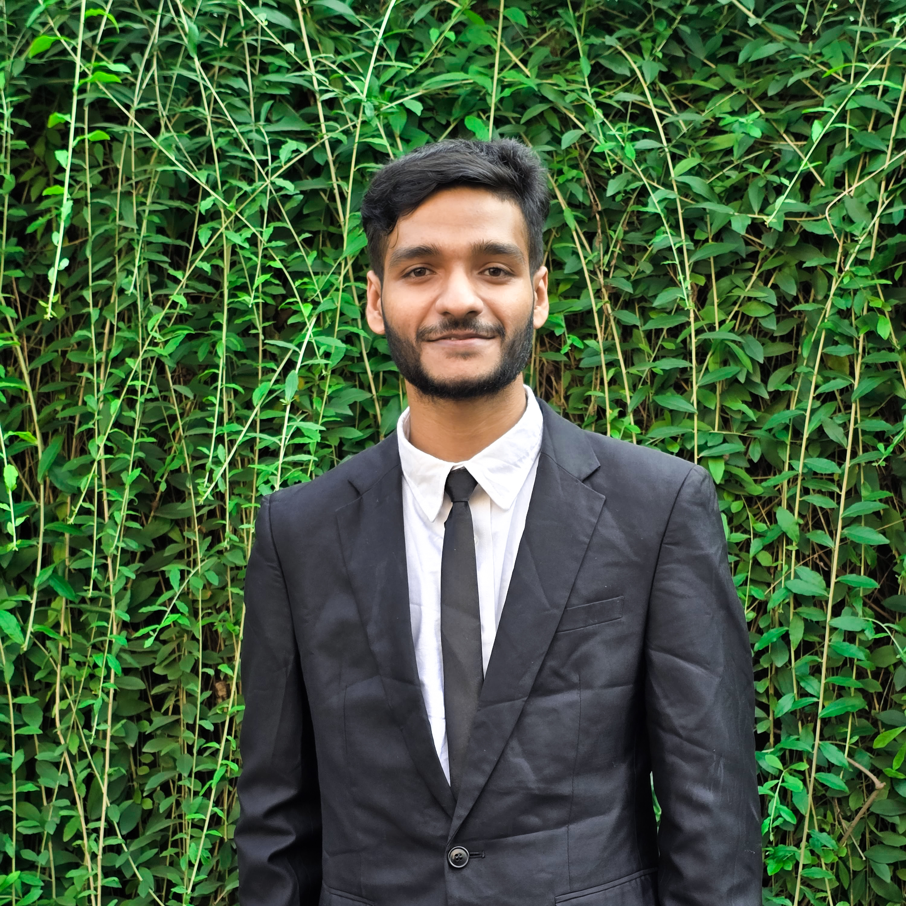

Ridwan Sarder

Ridwan Sarder in the "University of Dhaka".
Here's a timeline of Ridwan Sarder
- 6th April, 2003: Born in Mogbazar, Dhaka
- January, 2008: Admitted to Unity Pre-Cadet School, Bhashantek, Dhaka
- January, 2010: Admitted to Ibrahimpur Primary School, Kafrul, Dhaka
- April, 2012: Went to Bagerhat and admitted to Kodalia Bazar Primary School, Mollahat, Bagerhat
- June, 2015: Went to Faridpur and admitted to a Madrasa
- October, 2016: Back to Bagerhat zilla and admitted to Baraguni M.N Secondary School, Chitalmari, Bagerhat
- June, 2020: Completed SSC exam. Went to Faridpur and admitted to Nabokam P.U College, Faridpur
- 2023-Ongoing: Doing Undergraduate program from the University of Dhaka